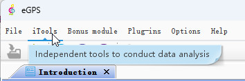
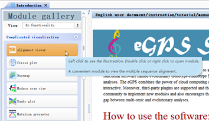
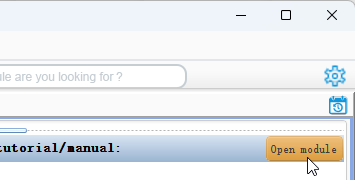

It has become increasingly challenging for researchers to analyze the exponentially expanding multi-omic data. In this project, we have developed a multi-functional software named evolutionary Genotype-Phenotype Systems (eGPS) that enables users to perform comprehensive multi-omic and evolutionary analyses. The eGPS combines the power of cloud computing and the advantage of desktop application, has a user-friendly graphic interface, and is highly interactive. Moreover, third-party plugins are supported and the developers can take the credits for contributing the plugins. This makes it easier for the community to implement new modules and also encourages their sharing. The eGPS not only develops the new functions/tools/methods but also bridges the gap between multi-omic and evolutionary analyses.
How to use the software:
Normally, using the software equal to use the modules. Current module is introduction module or module gallery, there are three ways to launch module:
- Through click the iTools/ Bonus module/ Plug-ins in the menu bar.

- Double click or right click the button in the module gallery.

- Clik the Open module button in the right bottom area.

More documentation:
Please click the Help menu to exploration.